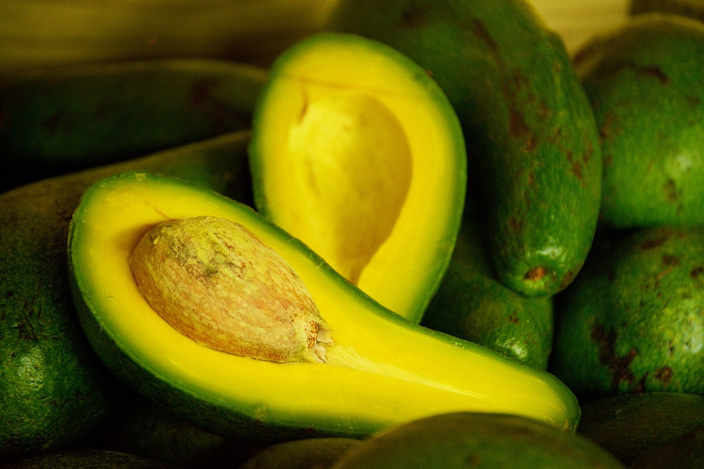

Palta: claves para reconocer las buenas y cómo madurarlas
LARISA SERRANO, 18 Jun, 2023
Palta, aguacate, avocado... Aunque se llame de distintas maneras en diferentes países, todos se refieren a la misma fruta, que en Argentina llamamos palta y tiene múltiples beneficios, si se la consume en cantidades apropiadas.
“Antes de hablar de alimentos con súper propiedades, es importante tener en cuenta que a pesar de que sea saludable “comer en exceso” puede ser perjudicial. Es un alimento con muy alto contenido en grasas, entre las que se destacan mono y poliinsaturadas. Este tipo de grasas son llamadas saludables porque previenen enfermedades cardiovasculares (como la formación de placas de ateromas), ayudan a reducir los niveles de colesterol LDL (“malo”) y aumentan los niveles de colesterol HDL (“bueno”). Posee además un considerable contenido en vitaminas del complejo B (sobre todo de ácido fólico que es una vitamina fundamental en los primeros 3 meses de gestación ya que tiene una participación activa en la correcta formación del tubo neural en el feto) y vitamina E (que es un potente antioxidante celular)”, explica Nela Di Pasquale, nutricionista, chef y creadora de la carta de Eggs & Greens Café.
En los últimos años, la palta se fue incorporando en distintas preparaciones saladas y también en el mundo de la pastelería. “A la hora de incorporar la palta en preparaciones dulces y saladas, debemos tener en cuenta que es un producto rico en grasas y calorías, así que debemos regular su cantidad, al igual que los productos con los que la vamos a fusionar. En platos salados, lo más recomendable es en ensaladas, ya que los vegetales son bajos en calorías, y en preparaciones dulces, debemos tratar de usar poca materia grasa extra”, detalla Diego Saire, subchef de Páru Inkas Sushi & Grill. Mientras Nela Di Pasquale suma un tip saludable: “Debido a su alto contenido en grasas saludables es un buen reemplazo para otro tipo de grasas que no sean tan saludables como ejemplo, la manteca”.
¿Cómo se reconoce una buena palta?
Se puede observar a simple vista en la superficie de la cáscara, que debe ser verde con un tornasolado morado. A medida que madura se torna más oscura, con una textura áspera, rugosa y la piel delgada. En su interior, la pulpa debe tener un color verde pálido con textura cremosa y la semilla debe poder retirarse con total facilidad.
Trucos para madurarlas rápido
El más simple: envolver la palta en papel de diario y colocarla en un ambiente cálido durante 5 días aproximadamente.
Con papel aluminio, cubrir por completo la palta para llevar al horno a 170 grados durante 10 minutos. Se retiran, se dejan enfriar y ya están listas para usar.
Con bolsas de papel: hay que colocar las paltas dentro de las bolsas y agregar una manzana o tomate maduro para aumentar el gas etileno. Luego se cierra la bolsa, se deja en un lugar cálido (24 grados) y en dos días deberían estar listas.
Volver